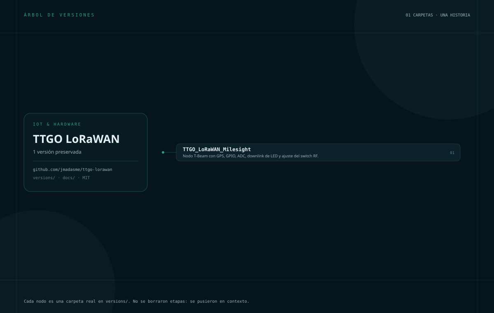

TTGO_LoRaWAN_Milesight
8 archivosNodo T-Beam con GPS, GPIO, ADC, downlink de LED y ajuste del switch RF.
Ver carpetaNodo TTGO T-Beam v1.1 con SX1262, GPS y telemetría hacia un gateway Milesight UG56.

Firmware para TTGO T-Beam v1.1 (ESP32 + SX1262) que envía GPS, GPIO y ADC por LoRaWAN y recibe comandos para el LED. Incluye la corrección del switch RF PE4259 por DIO2.
El T-Beam puede parecer que transmite y no hacerlo: el switch RF PE4259 necesita la señal DIO2 configurada o el SX1262 queda sordo.
Configurar el radio y el switch, enviar un payload con GPS y sensores, y usar downlinks para acciones simples como el LED.
Cada carpeta conserva una etapa del proyecto. No se borraron las anteriores: se pusieron en contexto.
Nodo T-Beam con GPS, GPIO, ADC, downlink de LED y ajuste del switch RF.
Ver carpetaFirmware para un nodo LoRaWAN sobre TTGO T-Beam v1.1, con ESP32, radio SX1262 y GPS NEO-M8N. Envía posición, estados de GPIO y una lectura de ADC a un gateway Milesight UG56, y acepta downlinks para controlar el LED. El payload final son once bytes, ajustados al data rate de la región.
Sirve como referencia para quien pone en marcha un T-Beam contra un network server embebido y descubre que el radio responde por SPI pero no transmite. Importa por el diagnóstico: la bitácora documenta el switch RF PE4259, la diferencia entre US915 y AU915, el JoinEUI que asigna el servidor y la persistencia del DevNonce, cuatro causas que producen el mismo síntoma.
El README original de la versión de referencia, completo.
Firmware para TTGO T-Beam V1.1 (ESP32 + SX1262) que envía datos de geolocalización GPS, estados GPIO y lectura ADC vía LoRaWAN a un gateway Milesight UG56 con servidor de red embebido. Control remoto de LED integrado vía downlink.
| Funcionalidad | Detalle |
|---|---|
| Join OTAA | AU915 subbanda 2, LoRaWAN 1.0.4 |
| Uplink | Cada 60s — 11 bytes: GPS + 7 GPIOs + ADC |
| Downlink | Control de LED (ON/OFF/TOGGLE/BLINK) |
| GPS | u-blox NEO-M8N, fix ≥4 satélites |
| GPIOs | 2, 13, 14, 15, 16, 17, 25, 26 como entradas pull-up |
| ADC | GPIO36, 12-bit escalado a 8-bit (0-3.3V) |
| Reconexión | Auto-rejoin cada 10s si pierde sesión |
El TTGO T-Beam V1.1 tiene un RF switch PE4259 entre el SX1262 y el conector SMA de la antena, controlado por el pin DIO2 del SX1262. Sin configurarlo, las transmisiones nunca llegan a la antena.
// CRÍTICO: sin esto, el gateway no ve ningún paquete
radio.setDio2AsRfSwitch(true);
Además:
- Región AU915 (no US915) — el UG56 opera en frecuencias AU915
- JoinEUI 24E124C0002ADD01 — asignado automáticamente por el NS del UG56
- node.scanGuard = 200 — tiempo de guarda entre canales
- TX Power 20dBm, TCXO 1.8V para precisión de frecuencia
| Byte | Campo | Descripción |
|---|---|---|
| 0-3 | lat |
Latitud × 10⁷, int32 LE |
| 4-7 | lng |
Longitud × 10⁷, int32 LE |
| 8 | sats+fix+gp26 |
[7:4]=satélites, [3]=GPS fix, [0]=GPIO26 |
| 9 | gpios |
[7]=GPIO25, [6]=17, [5]=16, [4]=15, [3]=14, [2]=13, [1]=reservado, [0]=GPIO2 |
| 10 | adc |
ADC GPIO36, 0-255 (0-3.3V) |
| GPIO | Función |
|---|---|
| 18,5,27,19 | SX1262 SPI |
| 23 | SX1262 RST |
| 32 | SX1262 BUSY |
| 33 | SX1262 DIO1 |
| DIO2 | RF Switch (interno, no GPIO) |
| 12,34 | GPS UART |
| 21,22 | AXP192 I2C |
| 4 | LED azul (LOW=ON) |
| 36 | ADC (0-3.3V) |
| 2,13,14,15,16,17,25,26 | GPIOs entrada |
| Hex | Acción |
|---|---|
01 01 |
LED ON |
01 00 |
LED OFF |
01 02 |
LED TOGGLE |
01 03 N |
LED BLINK N veces |
02 |
STATUS (triple flash) |
# Compilar
arduino-cli compile --fqbn esp32:esp32:t-beam .
# Subir
arduino-cli upload --fqbn esp32:esp32:t-beam --port /dev/ttyUSB0 .
# Monitor serial
arduino-cli monitor --port /dev/ttyUSB0 --config baudrate=115200
| Parámetro | Valor |
|---|---|
| DevEUI | 70B3D57E5F0040E4 |
| JoinEUI | 24E124C0002ADD01 |
| AppKey | CBD4C4992A115BC20118C53A4C1CC0D5 |
| Región | AU915, subbanda 2 |
El archivo docs/decoder_ug56.txt contiene el payload decoder JavaScript. Pegarlo en:
UG56 → Device Profile → Custom Payload Codec
| Error | Causa | Solución |
|---|---|---|
-1116 NO_JOIN_ACCEPT |
NS rechaza join | Verificar credenciales, endianidad, reset DevNonces |
-4 PACKET_TOO_LONG |
Payload >11B en DR bajo | Reducir payload o esperar ADR |
| Stack smashing | Buffer overflow | Verificar PAYLOAD_LEN |
| Gateway no ve paquetes | RF switch no configurado | radio.setDio2AsRfSwitch(true) |
| LED no enciende | GPIO4 pisado por INPUT_PULLUP | GPIO4 es solo LED, no está en gpioPins[] |
Las primeras versiones existen para que estos errores no se repitan: cada una dejó una decisión de diseño verificable.
El código original no activaba el control del switch PE4259, así que el SX1262 respondía por SPI pero no emitía señal. El gateway no veía ni los Join Requests y el dispositivo figuraba como nunca activado. Se resolvió con radio.setDio2AsRfSwitch(true).
El firmware usaba US915 y un JoinEUI generado a mano, mientras el UG56 operaba en AU915 con un JoinEUI propio que asigna al registrar. Los paquetes salían en una banda que el gateway no monitoreaba. Se cambió la región y se tomó el JoinEUI observado en los Incoming Packets.
Catorce bytes provocaban PACKET_TOO_LONG en DR0-DR2, y doce seguían desbordando hasta causar un crash por stack smashing. Se redujo a once bytes exactos, con GPS, GPIO y ADC comprimidos en ese espacio, y el error desapareció en las pruebas siguientes.
Cada ciclo de alimentación reiniciaba el DevNonce a cero y el servidor rechazaba el join por anti-replay, con código -1116. La solución fue guardar y restaurar el buffer de nonces en NVS, de modo que solo un reflash del firmware limpia la sesión.
Seis criterios con la misma escala en todo el catálogo, para comparar sin marketing.
TTGO T-Beam v1.1 con ESP32 y SX1262.
Revisá la región, las claves y el switch RF PE4259/DIO2.
No. Necesita cielo abierto para obtener fix.
Milesight UG56, aunque otro gateway LoRaWAN compatible debería servir.
Es una acción simple sobre el LED; no hay cola ni confirmación de aplicación.
Usá esta familia como base para ttgo lorawan. Está documentada para que puedas entenderla, ejecutarla y continuarla sin adivinar.